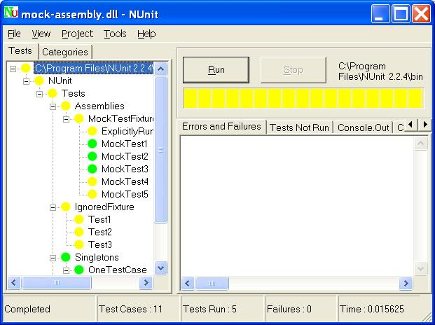

NUnit-Gui
The nunit-gui.exe program is a graphical runner. It shows the tests in an explorer-like browser window and provides a visual indication of the success or failure of the tests. It allows you to selectively run single tests or suites and reloads automatically as you modify and re-compile your code. The following is a screenshot of nunit-gui running the same mock-assembly.dll shown in the previous example.

As you can see, the tests that were not run are marked with a yellow circle, while those that were run successfully are colored green. If any tests had failed, they would be marked red.